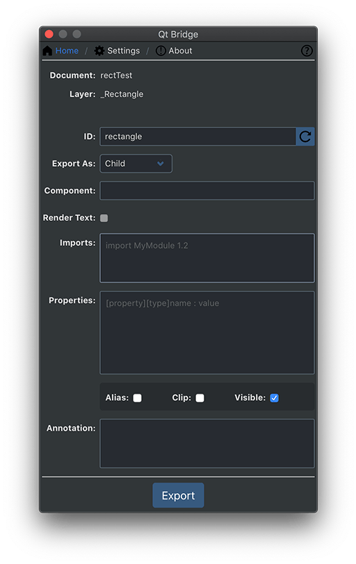
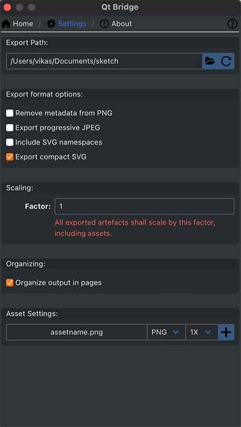
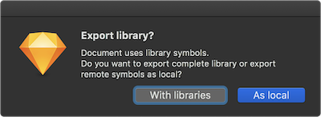

Using Qt Bridge for Sketch
Organizing Assets
To get the best results when you use Qt Bridge for Sketch to export designs from Sketch to Qt Design Studio, follow these guidelines when working with Sketch:
- Use pages for different purposes, such as sketching for trying out ideas, components for creating UI components, assets for images that you use in the components, and screens for building the UI screens using components and assets.
- Arrange each page into artboards. When you are happy with a design, move it from the sketching page to the components page and use it in screens. When you export your assets, you can skip all artboards that you don't want to be part of the final UI, to avoid cluttering the Qt Design Studio project. The code generated in Qt Design Studio corresponds to the structure of your Sketch document.
- Qt Bridge for Sketch supports document symbols and symbol overrides for text symbols. Each symbol is exported as a component, and each symbol instance is generated as a respective component instance in the generated component file. The symbol overrides are exported as values of properties for the components. For example, if you use symbol overrides to specify the text for each button instance, it is exported as a value of the text property.
- Create components in Sketch and export them to Qt Design Studio before you start making instances of them. In Qt Design Studio, add functionality to the components, such as button states and then bring them back to Sketch as assets. If you use functional Qt Design Studio components in Sketch, you will find it easier to merge new iterations of the design to Qt Design Studio and continue to build the screens there.
- Use descriptive and unique IDs to avoid duplicate IDs after exporting assets and importing them to Qt Design Studio.
- Store all assets in the scalable vector graphics (SVG) format to be able to easily rescale them for different screen sizes and resolutions. You can export assets into JPG, PNG, or SVG format and select options for optimizing them during the export.
To use the fonts that you use in Sketch also in Qt Design Studio, you need to import them to Qt Design Studio as assets. Qt Design Studio deploys them to devices when you preview the UI. For more information, see Using Custom Fonts.
For more information, see the Qt Bridge for Sketch tutorials that are also accessible from the Tutorials tab of the Welcome mode:
Items You Can Export
You can export the following parts of your design using Qt Bridge for Sketch:
- Layers
- Shape layers
- Vector layers
- Pencil layers
- Slice layers
- Text layers
- Groups
- Artboards
- Hotspots
- Symbols
- Libraries
Using Artboards
The relationships between artboards and layers are preserved when you export designs from Sketch and import them into Qt Design Studio.
An artboard can only be exported as a component or skipped. A component will be imported as a separate file that contains all the artwork on the artboard, except layers that are set to be skipped or exported as child items. The child items can contain graphical assets or text.
To use the contents of an artboard as a single image in the UI, you can merge the groups and layers when you export them. During import, the contents are flattened into one file. The merge is done in a way that enables you to change the groups and layers in Sketch and then export and import the artboard again. This is an easy way to create a reference image of how the final UI should look like, for example.
Place different parts of the UI, such as menus and pop-ups, on separate artboards to be able to export them as components or children and to import them as component files and images that you can drag and drop to the the 2D view in Qt Design Studio Design mode while creating a UI.
If you want to use the assets on an artboard in Qt Design Studio as they are in Sketch, you can import the artboard without generating code for it.
Using Layers and Groups
When you use Qt Bridge for Sketch to export your designs, you will determine how you want each layer or group to be exported: as merged or as child. Each layer or group represents a separate image in the UI when it is exported as a child. The asset of the layer or group is merged to its parent group or artboard if it is exported as merged.
You can select the asset format and DPI to use for each image in Settings > Asset Settings.
Using IDs
The most common issues in using Qt Bridge for Sketch are caused by having duplicate IDs in your project. Even though the importer in Qt Design Studio is capable of detecting and retaining IDs, you should still manually check all the IDs to make them unique and descriptive.
Name the layers in exactly the same way as your IDs, to be able to find artwork later, especially as the export files can grow very large and complicated as they approach the level of a complete UI project.
Note: Even though Qt Design Studio is capable of handling the IDs during merges, we recommend that you do not change the IDs after the first time you export the assets, to avoid problems.
Exporting Assets
By default, assets are exported as follows:
- Artboards are always exported as components or skipped.
- Asset layers are exported as merged.
- Text layers can only be exported as child or skipped.
- A hotspot layer can only be exported as child or skipped. It is always exported as an instance of the Mouse Area component.
- A symbol instance layer can only be exported as child or skipped.
- Images are exported in JPG, PNG, or SVG format, depending on your selection.
Make sure to skip all artboards that you don't want to be part of the final UI to avoid cluttering the Qt Design Studio project. You can select multiple artboards on a page and then select Skip in Qt Bridge for Sketch to skip them.
You can export assets using the default settings and make all the changes later in Qt Design Studio. If you are familiar with the QML syntax, you can modify the settings to tailor the generated code to a certain degree. For example, you can specify the component or Qt Quick Studio Component to use for a component or layer. If you have drawn an arc that you mean to animate, you can export it as an Arc component to avoid having to replace the arc image with an Arc component in Qt Design Studio. Or you could export a button as a Qt Quick Controls Button component.

Specifying Settings for Exporting Assets
To export your design using Qt Bridge for Sketch:
- Qt Bridge for Sketch automatically proposes identifiers for all groups and layers that you can change in the ID field. Use unique and descriptive IDs to avoid duplicate IDs when the layer and the respective artwork is imported into Qt Design Studio.
- In the Export As field, select the export type for the group or layer:
- Component exports the selected symbol with metadata. The exported data can be used later to import the component as a separate UI file that contains all the artwork in it, except layers or groups that are set to be skipped or exported as child items.
- Child exports each asset of the selected group or layer a separate PNG file, with references to the images in the component file. You select the image format in the Asset Format field.
- Merged merges the selected groups and layers into the parent artboard or group as one item.
- Skipped completely skips the selected layer.
- In the Component field, specify the component or Qt Quick Studio Component to morph this layer into. The component that is generated during import will be of this type. For example, if you drew a rectangle, you can export it as a Rectangle component. You can provide the import statement of the module where the component is defined in the Imports field.
Note: The implicit properties except position and size are not applied when the Component is defined. For example, all text properties will be ignored if Component is defined for a text layer, but explicit properties defined in the Properties field will be applied.
- Select the Render Text check box to render the text layer as an asset. The layer will be exported as an asset and the text data will not be exported. This allows the text layer to be merged to parent artboard or group as well.
- In the Imports field, enter additional import statements to have them added to the generated code file. For example, to use Qt Quick Controls 2.3, you need the import statement
QtQuick.Controls 2.3and to use Qt Quick Studio Components 1.0, you need the import statementQtQuick.Studio.Components 1.0. You can also import a module as an alias. - In the Properties field, specify new properties or assign values to the existing properties of the component. You can also add and modify properties in Qt Design Studio. The following are a few examples of the properties:
property int counter: 5 property string label: "ok" antialiasing : true width: parent.width / 2
To remove a property, write a "dash" (-) followed by the "property name". For example:
- widthwill remove the property width from the generated code.
- Select the Alias check box to export the item generated from this layer as an alias in the parent component.
- Select the Clip check box to enable clipping in the component generated from the layer. The generated component will clip its own painting, as well as the painting of its children, to its bounding rectangle.
- Select the Visible check box to determine the visibility of the layer.
- In the Annotations field, specify annotation for the component. See Annotating Designs.
- Select the Settings tab to specify the export path and asset format.
- Select Export to export the document into a .qtbridge archive.
- When the exporting is done, select OK.
All the assets and metadata are exported into a .qtbridge archive in the directory you specified. This might take a little while depending on the complexity of your project.
You can now create a project in Qt Design Studio and import the .qtbridge archive to it, as described in Creating Projects and Importing Designs.
Specifying Export Path and Asset Format
You can export assets into JPG, PNG, or SVG format. To specify export path and asset format, select Settings.

Qt Bridge for Sketch exports assets to a .qtbridge archive named after your Sketch file. By default, the directory is located inside the parent directory of the Sketch file being exported. You can change the export path in the Export Path field.
You can select the default asset format and DPI to use for each layer. These settings are overridden by the layer export settings from the Sketch app. That is, if the layer is made exportable in the Sketch app, the respective asset format and DPI settings are preserved.
To optimize the assets, you can select the check boxes in the Export format options field. You can remove metadata from PNG files, export assets as progressive JPG or compact SVG, and include SVG namespaces in SVG files.
Scaling
You can scale the generated assets and UI artefacts by setting a scaling factor between 0.1 and 10.0 in Factor.
Note: The factor is independent of the asset scale settings, that is, 2x assets shall have a size of 5x when a scale factor of 2.5 is selected.
Organizing
Select the Organize output in pages to organize the generated UI inside the directory named after the parent page of the respective component. The default behavior is to generate UI inside the directory selected during import in Qt Design Studio.
Note: Using invalid characters or reservered file names for the page name will result into imports errors as page name is used for the directory name to organize the UI files in Qt Design Studio .
Exporting Library Symbols
Qt Bridge for Sketch can handle symbols used from a local library. Before you use Qt Bridge for Sketch to export a document that contains remote symbols, you must prepare the Sketch document of the local library with Qt Bridge for Sketch for export.
For more information about Sketch libraries, see Sketch documentation.
You can either export the complete library with the document or unlink the symbols. Unlinking the symbols exports the symbols as if the symbols were part of the document as Group layers. Exporting the complete library exports all the layers of the library irrespective of their usage in the document.
To export a library, select Export. Qt Bridge for Sketch asks you whether you want to export the complete library or to unlink the symbols.
